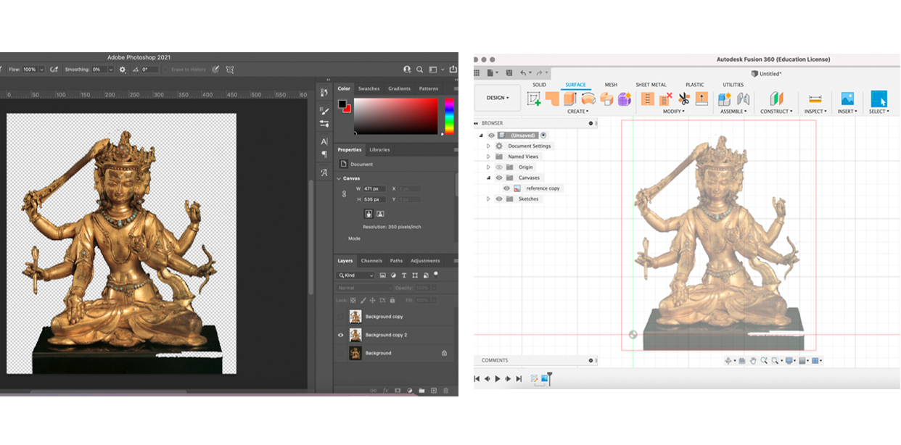
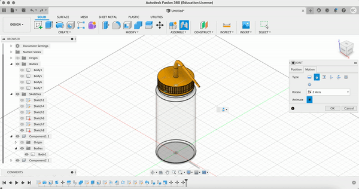

Press-fit construction
The Inspiration

This week, I went out to eat at a Tibetan restaurant, where they had a beautiful tapestry depicting a Buddhist god with many arms. Knowing that for this week's assignment, I had to create a press-fit construction kit that can be assembled in multiple ways, I thought the many arms would make for a beautiful design.
After scrolling through many images of various Buddhist gods and idols, I picked one image to use as a reference for my model. I cleaned up the image in Photoshop and then exported the .png to Fusion360 to use as a reference as I drew out the sketch of the main body.
The Sketch

Before I proceeded with creating the various parts of the press-fit construction, I sketched out the ways I would transfer a 2D image to a freestanding 3D construction. I was concerned with how I would ensure the model would stay upright and how I would connect the arms to main body. For simplicity, I decided I would create cross-hair feet to keep the model upright and create a 'spine' running behind the model to attach the arms.

Actually sketching the press-fit shapes in Fusion3D was the most time intensive step of the process, but only because the design is mainly non-linear shapes. I made simplifications on smaller details for time. The final Fusion3D sketch included designs for the front-facing torso, arm, spine, and feet. The shape for the arms were replicated later in Lightburn. The width of 'notches' that would be used to press the shapes together depends on the thickness of the stock and the laser kerf. I wanted a tight fit between my pieces so I standardized my notch widths to 4.2mm.
The Cut & Assembly

The design was cut onto 4.5mm cardboard stock. I used the recommended laser setting which was 15mm/s speed and 60% strength, which cut clean through the cardboard.

As shown above, the model can be constructed to customize the direction of the arms and torso. The 4 unattached arms can be fitted facing up or down, and the torso can lean left or right depending on how the pieces are assembled.
The Final Product
I am very happy with the final result. My small press-fit idol now sits happily on my windowsill to bless all my future fabrication endevours.
3D Model & Assembly
Inspo
The second half of our project this week was to create a 3D model in Fusion 360. I had some previous experience with CAD software so I felt comfortable working with the Sketch features in Fusion 360. I wanted to create components that had some interesting geometries. I chose to model the bottle of IPA that we had lying around in the Makerspace.
Bottle body
Initally, I thought to start with a cyclinder and cut out the corners and top sleeve out of the object later.
However I quickly found that the tools available in Fusion 360 made it easier to start with the side profile of the bottle first. So I started over with the measurements along the side of the bottle and sketched out a half-profile.
Using Revolve, the side-profile created a solid object, but my bottle was hollow. So I used the Shell tool and measured the thickness of my bottle's walls to set the inner measurement. I was surprised that the Shell tool was able to follow the contour of the sketch I had made to create an even thickness throughout the height of the object. I played around with the material of th object to ensure the inside of my bottle looked the way I wanted.
Next, I needed to create the threading at the neck of the bottle. I tried using the Thread tool with a number of different settings, but I could not get it to replicate the threading I saw on the original bottle. Specifically, the Thread tool cut into the thickness of the object I had created, which makes sense if I was fabricating a screw, but I needed the threading to add onto the existing object.
After some Googling, I found that the Coil tool produced a shape I was after. I created the coil as a separate object and then used Split Body to separate the coil into an inner and outer half. I discarded the inner half and used Combine to join the outer half of the coil to the main body.
Cap and Spout
The cap began as a simple stout cylinder, created by Extruding a circle. Again, I used Shell to hollow out the inside of the cap.
The cap featured what I will call a "ridging" effect along its perimeter. I replicated this shape in my model by first creating a rectangular divot with Emboss and Chamfer onto the side of the cap and then using Circular Pattern to stamp it all around the edge.
Next, I had to create the irregularly shaped spout. I watched a tutorial on how to use the Sweep tool which I found worked very well for this application. I created a path that followed the bend of the spout on the original bottle then I measured the base diameter to use as the sweep profile.
Assembly
The assembly of the two components was straightforward. Given that the cap needed to twist on, I used a Join with Revolute motion, producing the final result shown above. Now I can wipe down my digital 3D printer beds with IPA!